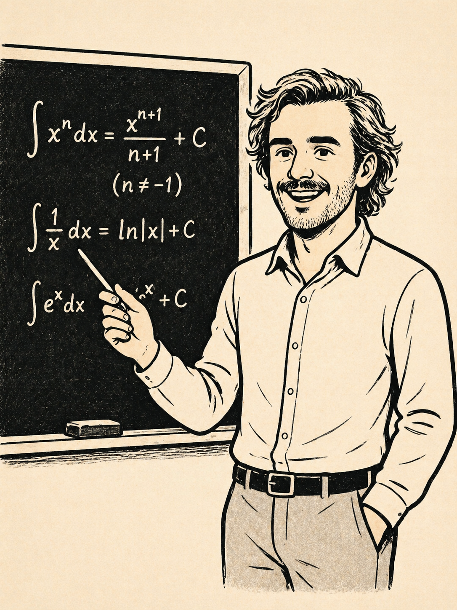

Griezmann, exigencia y compromiso
Griezmann no se despedirá alzando la copa. El Atlético sucumbió en la final ante la Real. Algunos de mis amigos hablan de decepción, de fracaso, de perder contra un equipo teóricamente inferior. Les frustra que la derrota no me indigne.
Sin embargo, yo me siento relativamente orgulloso. Musso regaló dos goles. Nos repusimos a un gol a los veinte segundos y remamos; después, un penalti antes del descanso… y volvimos a remar. Me habría encantado ganar, pero luchamos hasta el final y perdimos en los penaltis. C’est la vie.
Y es que la exigencia es un arma de doble filo que yo no empuño. A lo largo de esta etapa como profesor —que se acerca a su fin— he pasado por un proceso que ha transformado mi manera de entenderla.
No creo en los profes que exigen a sus alumnos aspirar a la intelectualidad mientras hablan de La isla de las tentaciones en los recreos. De hecho, si la llamas “la isla”, ya vas mal. Igual que si llamas “el club” al club de mar: eres un pijazo.
Prefiero aspirar a ejemplificar sin predicar.
No me veréis en el parque hablándole a mis hijos en inglés con acento de Almería. No quiero adaptarlos al mercado laboral desde la cuna. Espero que esto no cree zánganos. Pero, sobre todo, no quiero que sientan la presión de convertirse en seres excelsos. Ni siquiera quiero exigirles que emulen mis escasos y tristes logros.
A mi forma de ver, ser exigente solo te puede llevar por dos caminos: el de ser un hipócrita o el de que la coherencia te entierre bajo una losa de autoexigencia que conduce, casi siempre, a la infelicidad.
Los que exigen mucho al camarero que te sirve en el bar, en realidad están diciendo: «yo merezco más, es injusto que me traten así». Y eso no es más que una forma —bastante necesitada— de reafirmarse. La exigencia ajena y la falta de autoestima son, en el fondo, dos caras de la misma moneda.
El compromiso, en cambio, no se negocia. Deseo que Antoine lo entienda así, sobre todo en este momento en el que ambos afrontamos una etapa de cambio.
Estuvimos cerca de perder la oportunidad de ser “jugador franquicia” por compromiso. Ahora, mientras saboreamos los últimos días de olor a pasto y tiza, espero que sienta que con eso es más que suficiente.
Orlando nos espera.
